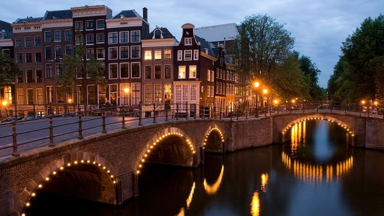

Amsterdam, Olanda.
Amsterdam, Olanda.
Amsterdam, cunoscut şi ca "Veneţia Nordului" este capitala Olandei (deşi o serie de instituţii oficiale îşi au sediul la
Haga), un oraş mare, cu mai mult de un milion de locuitori. Este unul dintre centrele financiare importante ale Europei
şi un oraş al afacerilor, surclasat în Europa doar de Londra, Paris, Frankfurt şi Barcelona.
Este situat în partea de nord a Olandei, într-una dintre cele mai mari aglomerări urbane din Europa, Randstad, formată
din Amsterdam, Rotterdam, Haga şi Utrecht, cu o populaţie de peste şapte milioane.
Aici s-au născut sau au trăit Baruch Spinoza, Rembrandt van Rijn, Anne Frank.
Cartierele Amsterdam-ului sunt: Centrul vechi, Inelul de canale (Singel, Herengracht, Keizersgracht, Prinsengracht,
Lijnbaansgracht, Singelgracht), Jordaan, Plantage, Sud, Vest, Nord, Est, Bijlmer.
Zona cea mai veche este Wallen. Waterlooplein este vechiul cartierul evreiesc, iar Grachten sunt canalele medievale care
înconjoară zona centrală a oraşului. Jordaan şi de Pijp sunt dincolo de canale şi formează zona muncitorească.
Tot dincolo de canale sunt Museumplein, zona cu principalele muzee, Vondelpark, parcul din secolul al 19-lea şi Plantage
cu grădina zoo. Câteva secţiuni din oraş şi din zona urbană din jur sunt poldere (porțiuni joase de uscat): Aalsmeer,
Bijlmermeer, Haarlemmermeer şi Watergraafsmeer.
Puţină istorie
Amsterdam a fost înfiinţat ca mic sat de pescari în secolul al 12-lea, prima atestare a numelui fiind din 27 octombrie
1275.
Peste el trece războiul cu Spania care aduce independenţa Olandei. Ca urmare a politicii de toleranţă, aici se stabilesc
toate religiile sau grupurile persecutate în alte ţări.
A devenit un centru comercial important în secolul al 17-lea în timpul Epocii de Aur a Amsterdamului. Aici a apărut
prima bursă în biroul Companiei Indiilor de Est şi societăţile mixte, care au dat naştere mai târziu capitalismului
modern.
Prosperitatea oraşului intră în declin în secolele 18 şi 19. Sfârşitul secolului al 19-lea înseamnă o noua Epocă de Aur.
Apare canalul Amsterdam-Rin şi canalul spre Marea Nordului, multe dintre muzee şi gara.
În secolele 19 şi 20, oraşul se extinde în toate direcţiile. Canalele Herengracht, Keizersgracht şi Prinsengracht intră
pe lista UNESCO World Heritage.
Cum ajung la Amsterdam
- Cu avionul. Amsterdam Airport Schiphol este unul dintre cele mai aglomerate aeroporturi din lume.
Este situat la 15 km
sud-vest de oraş.
- Cu trenul. Amsterdam este deservit de zece staţii de cale farată: Sloterdijk, Zuid, Amstel, Bijlmer ArenA, Lelylaan şi
Amsterdam Centraal sunt interurbane, iar RAI, Holendrecht, Muiderpoort şi Science Park sunt staţii locale.
Amsterdam Centraal este şi gară internaţională, care asigură legături cu Austria, Belgia, Cehia, Danemarca, Franţa,
Germania, Ungaria, Polonia, Rusia şi Elveţia.
22.04.23
Author
Las Vegas, colocvial numit doar „Vegas”, este cel mai mare oraș din statul Nevada al Statelor Unite ale Americii și
capitala comitatului Clark. Este cunoscut ca destinație turistică foarte populară.
Întrucât statul Nevada nu percepe taxe pe tranzacții, Las Vegas este cunoscut internațional ca un oraș de vacanță cu
hoteluri și locuri de odihnă, magazine și faimoase cazinouri pentru jocuri de noroc. Constucția orașului a început în
anul 1905, iar localitatea a obținut titlul administrativ de oraș în 1911.
Datorită unui ritm de creștere suținut, Las Vegas a devenit cel mai mare oraș din Statele Unite fondat în secolul al
XX-lea, asemănător cu Chicago, care este considerat cel mai mare oraș fondat în secolul al XIX-lea. Las Vegas este în
prezent cel de-al 28-lea oraș din Statele Unite după numărul de locuitori.
Odata cu sosirea in 1960 a omului de afaceri Howard Hughes, care a achizitionat multe hoteluri si cazinouri precum si
televiziunea si statiile radio din oras, multe alte corporatii au inceput sa achizitioneze si sa construiasca hoteluri
si cazinouri aici, regiunea dezvoltandu-se destul de repede.
Desi cazinourile si locurile pentru jocuri de noroc din Las Vegas au fost depasite de cele din Macau, Las Vegas-ul
ramanea cea mai cunoscuta destinatie pentru distractii si jocuri de noroc din lume.
22.04.23
Author